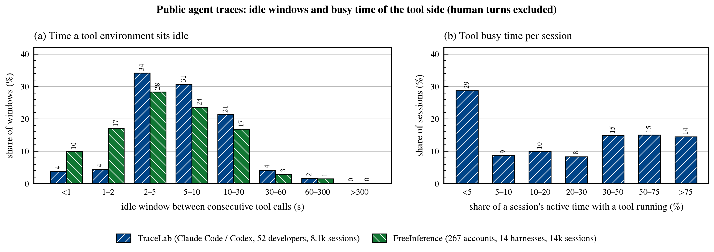

Research brief v0.4, 16 Nov 2026 · target: ACM ICS'27 (or HPDC'27 / SC27)
Bracketed numbers [n] cite the references at the end. Numbers carry their sources' conditions. † = found by search, not read in full. [INF] = our inference, not a measured fact.
Summary
Setting. LLM agents run tools; some tools need a GPU (compile and time a kernel, run an ML potential, train a model). The LLM is a remote API. The GPU tools run on a platform owned by an operator: an HPC facility, an agent-sandbox service, or an RL/eval cluster [1][2][4].
Problem. Operators either reserve a GPU per agent session (GPU busy 3.4% of the session [1]; a 128-GPU exclusive pool [2]) or share GPUs naively. Naive sharing distorts what the agent observes: timings, OOM kills, success rates [1][21][22].
Thesis. For agent tools, the platform's resource policy is part of the experiment the agent runs. Policy changes what the agent observes, which changes what it does, which changes how much GPU it asks for and whether it succeeds. Classic serverless and HPC scheduling assume demand does not depend on the scheduler.
Contributions (to be established):
C1: measure this loop for GPU tools.
C2: judge platforms by GPU-seconds and joules per solved task.
C3: an admission policy that shares and parks GPUs only while the agent's observations stay intact. Its capacity is then set by HBM headroom and memory-tier bandwidth, which is the link to the memory/storage portfolio.
Not ours (§3):
releasing GPUs between interactive steps [9][10];
parking state while the LLM thinks [11][12];
GPU suspend, swap and checkpoint/restore [14]–[20];
timing distortion under sharing [1];
infrastructure changing agent outcomes [21];
OOM-aware scheduling of agent tools [22].
Status. Scripts for five studies are ready (motivation/). One pair of runs (experiment M5) decides whether the thesis holds. ICS'27 paper deadline: 7 Dec 2026.
1. Background
1.1 How agents execute GPU tools in production
The LLM never runs code. It returns a tool call (e.g., bash: python bench.py); the harness (Claude Code, Codex, oh-my-pi, ChemGraph) executes it and feeds the output back as the next prompt. A "GPU tool" is any command whose code uses a GPU, so it runs wherever the harness sends it:
the harness's own machine;
a Slurm job;
a remote GPU service reached by ssh, a CLI or HTTP;
an MCP server on a GPU host.
Figure 1. Production setting. On the Harvard cluster, harnesses run on login nodes and call vendor APIs; agents account for 55.8% of jobs and 42.7% of GPU-hours [4]. Kernel-agent platforms send GPU verification and profiling to shared pools [1][2][3]. A single user running tools on their own GPU is out of scope: there is nothing to share.
1.2 Why a shared, serverless-style platform at all
Principle. Serverless pays off when (i) many clients share a finite resource, (ii) each client uses it in short bursts with long idle gaps, and (iii) the platform can release the resource during the gaps without losing the client's state. Bare metal (a dedicated GPU per user) is simpler and wins whenever (i) or (ii) is false.
Public traces show that agent tool use satisfies (ii). TraceLab (52 developers, 8.1k sessions) [5] and FreeInference (267 accounts, 14 harnesses) [6] give:
a median idle gap of 4–6 s between consecutive tool calls;
a median tool busy share of 23% of a session's active time;
GPU busy 3.4% of a session on a production kernel-agent platform [1].

Figure 2. Our analysis of TraceLab [5] and FreeInference [6] (motivation/public_traces/analyze.py). Human turns are excluded.
Idle gaps between tool calls: 92% (TraceLab) and 73% (FreeInference) are ≥ 2 s.
Busy share: 29% of sessions run a tool < 5% of their active time.
Caveat: GPU tool calls are rare in these coding traces: 3.2% / 0.08% of shell calls. GPU-specific behaviour must be measured (§4).
This argument is already published for agents and notebooks [7][8][9][10], so "agents are bursty, therefore serverless" is background, not a contribution.
1.3 Where the original GeFaaS draft stands
The 2022 draft (OpenWhisk, MPS sharing, rCUDA remote GPUs, memory-aware placement) is superseded mechanism by mechanism:
MPS sharing for functions: FaST-GShare [27];
remote GPUs for functions: DGSF [28];
memory-aware model placement and swapping: Torpor [17];
distorted unless restore stays hidden and memory headroom is kept [INF]
not yet measured for GPU tools: experiment M5 (§4)
Principle. In classic serverless the trade-off is utilization against latency: a cold start makes a request slower but does not change its answer. For agent tools, the trade-off is utilization against observation fidelity. Sharing can change the tool's output (a slower timing, an OOM error, a timeout), and the output is the agent's next input.
3. What is already known (not our contribution)
Idea
Prior work
How it bounds our claims
Release the GPU between interactive steps; prepare state during think time
LooseLeaf [9] (notebooks; prepares state while the user edits; 32–55% fewer GPU-hours), NotebookOS [10]
We do not claim idle-GPU reclamation for interactive work
Checkpoint or park state while the LLM is thinking
Crab [11] (overlaps C/R with LLM wait; >75% of turns have no recovery-relevant state), DeltaBox [12] (hides its dump in the LLM I/O window); both CPU sandboxes
The effect is known for CPU/RAM in evals; we study GPU tools, platform policies, and demand
Scheduling agents' tool commands on a shared host to avoid OOM
ToolSched [22] (single host, CPU/memory, resource hints over MCP)
We do not claim OOM-aware tool scheduling
KV-cache retention and offload across tool waits
TokenCake [24], Continuum [25], NVIDIA Dynamo agent hints [26]
Provider-side; outside our perspective (LLM is opaque)
Agents are serverless workloads; state breaks the FaaS contract
[7], [8]
Background (§1.2)
Searches cannot prove absence: "not found" in §4 means not found in arXiv, USENIX and ACM searches up to 16 Nov 2026.
4. Thesis and contributions
4.1 The principle: agent tool demand is endogenous
Classic assumption. FaaS and HPC schedulers assume demand is exogenous: requests arrive, and each request carries a fixed amount of work. The scheduler can make a request faster or cheaper, but cannot change how many requests come next or what they compute.
What agents change. A tool's output becomes the agent's next prompt, and the agent decides the next call from it. If the platform perturbs the output, the agent changes course:
a noisy timing makes it keep a slower kernel or try more variants;
an OOM makes it shrink the problem;
a restore delay that hits a timeout makes it retry;
a different GPU model makes it tune for the wrong hardware.
So the scheduler partly creates the demand it then schedules, and influences the quality of the result.
3→4→1 (open): how the changed behaviour turns into GPU demand and outcome quality, and how the scheduler then reacts to demand it created. Not documented for GPU tools in what we found.
4.2 Contributions
Contribution
Underlying principle
Why bare metal or naive serverless misses it
Delta over closest work
C1 · Measure the loop for GPU tools. For kernel agents (KernelBench) and science agents (ChemGraph + MACE), vary sharing level, HBM headroom, restore delay and device class. Record observations, trajectories, outcomes and GPU cost.
Endogenous demand (§4.1)
Both measure per call or per job, so they never see the trajectory change
[21]: CPU/RAM limits vs eval success. [1]: timing vs rank on replays. Ours: GPU tools, platform policies, demand and outcome together
C2 · Outcome-normalized efficiency. Judge an agent platform by GPU-seconds and joules per solved task at equal outcome quality.
If demand depends on policy, per-call throughput can rise while cost per useful result also rises (more retries, worse kernels). Energy matters too: allocated but idle GPUs still draw substantial power, 10.7% of cluster GPU energy in one measurement [32].
No serverless or HPC paper found using outcome per GPU-second for agent tools
C3 · Observation-preserving admission. Share or park a session's GPU state only while its declared observation channels stay within tolerance (Figure 4).
Protect the agent's input; then maximize packing
Naive packing maximizes utilization and breaks observations; exclusive allocation keeps observations at ~3% utilization
[1] protects timing on one node. [22] avoids OOM on one CPU host. Ours: several channels, GPU memory tiers, cluster-level
4.3 How C3 works, and why memory capacity and bandwidth set its limits
Figure 4. C3: observation-preserving admission.
Principle. Once observations are protected, packing more sessions onto a GPU is no longer limited by compute; tools leave most of it idle (Figure 2; [1][31]). It is limited by two memory quantities:
HBM headroom, which decides how many sessions' warm state can stay resident without OOM;
tier bandwidth, which decides whether parked state can return within the agent's think time.
That makes memory capacity and bandwidth first-order factors in outcome-normalized platform efficiency (C2), not only in raw utilization. This is the claim to test for the memory/storage portfolio. A capacity sweep alone would only be a characterization; prior work already shows more HBM holds more state [17][23].
Kill criterion. If live runs show that agent outcomes and demand do not respond to platform policy, apart from the timing channel [1] already covers, the thesis reduces to [1] + [9]. We then pivot (Appendix B) after a fresh novelty check.
5. How we test it
5.1 Setup
Three machines in every run, as in production:
LLM: Qwen3-Coder-30B-A3B, BF16, NVIDIA Dynamo 1.6.2 on the A100-DGX;
harness on an x86 server;
tools on H100 / H200 / GH200 nodes.
Dynamo 1.6.2 is the last release line that ships the KV Block Manager (deprecated in 1.5.0, removal targeted for 1.7.0) [39]. We do not use it, because the LLM is treated as opaque.
Workloads (open source, widely used):
KernelBench [36] driven by mini-SWE-agent [37] (timing-critical calls);
ChemGraph [35] with MACE GPU calculators (calls that produce results).
Rules:
the same task population, GPU budget and LLM across policies;
outcomes re-measured on an idle GPU (kernels) or scored by ChemGraph's judge;
n ≥ 3 seeds;
memory settings anchored at real product sizes (80 / 96 / 141 GB HBM);
M5 · policy loop (m5_policy/). Same tasks under: exclusive; 2/4/8 sessions per GPU (± MPS); HBM capped at 80/96/141 GB; naive park/restore
Kill criterion
H7
Classic and outcome-normalized metrics disagree (tool calls per GPU-hour ↑ while solved tasks per GPU-hour ↓)
C2 becomes a methodology note
H8
The gap between perceived and true kernel speedup grows with sharing (live, end to end; [1] measured replays)
The timing channel is benign at these sharing levels
H1
Under exclusive allocation, tool GPUs idle through remote-LLM think time
M1 · session anatomy (m1_sessions/)
No headroom to share
H3
Think time exceeds park + restore of the tool state S
M2 · park/restore per tier (m2_park_restore/)
Keep state resident
H2, H4
Sharing capacity is set by HBM capacity (H2) and bandwidth (H4) rather than compute
M3 · headroom on capped H200 vs H100 (m3_headroom/)
The memory link weakens; report it
H5
Timing-critical calls need exclusive windows
M4 · fidelity (m4_fidelity/)
Simplify C3 check ①
First decision: run one seed of exclusive vs 8 sessions per GPU on KernelBench. That pair settles H6 before the full grid is spent. Run book: motivation/PLAN.md.
6. Venue and timeline
ICS'27 [38]: abstract 1 Dec, paper 7 Dec 2026; 11 pages; Atlanta (FCRC), June 2027.
Scope rule: desk-reject if HPC appears only in the motivation. The CFP asks whether an HPC operator could make a different decision from the results. Our results tell a facility operator how to run agents' GPU tools.
Fallbacks: HPDC'27 (typically mid-January) or SC27 (typically spring); neither is announced yet.
Figure 5. ICS'27 is realistic only if the M5 kill check and M1/M2 run this month.Appendix A — the six recommended SC26 papers, and what they leave open
Paper
Takeaway
Gap relevant to us
eFaaS [40]
eBPF / kernel-bypass FaaS for bursty HPC workflows; 8 nodes
No GPU, state or agents
HolyDiver [41]
Carbon- and water-aware serverless scheduling; 10 regions
CPU only
Hybrid HPC–serverless task placement [42]
Static candidacy plus placement for workflows
Accelerators named as future work
AAFLOW+ [43]
KV cache as a distributed object for multi-agent workflows (modeled results)
Provider-side KV; no tools
CoreFlow [44]
Context-centric GPU allocation for agent workflows; 32 GPUs
LLM side; whole-GPU granularity
SZ-Bench / SZ-Gen [45]
HPC kernel agents on V100 / MI300 / Cerebras; hundreds of profile/validate iterations
Exactly the GPU-tool workload we target
Appendix B — directions considered and set aside (pivot options)
Direction
Why not first
Surrogate inference as shared functions for AI-coupled simulations
Strong HPC fit, but needs partners with production coupled codes. Per-timestep latency may force co-location (SmartSim). Main pivot option.
A harvest-function contract plus energy per useful operation (filling decode slack)
Mechanisms are crowded: Valve [30], ConServe [30], "The GPU Needs an OS" [31]. Also needs the operator to host the LLM, which is our follow-up "Mode B".
Joint KV + sandbox state management
Provider-side and cloud-centric; strong groups active [11][12][24][25]
HPC-native agent substrate on Slurm
Risks being integration work. RASER [34] covers job arrays; kept as our deployment context.
Functions inside AI workloads (LoRA, MoE experts, RL rewards, drafters)